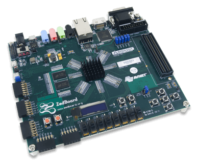

ZedBoard
ZedBoard 是 Digilent 基于 AMD（Xilinx）Zynq-7000 XC7Z020 APSoC 的开发板。 openEuler Embedded 为它提供 arm32 验证镜像：内核、glibc 等组件与 openEuler 基线对齐，处理器运行在 armv7a/Cortex-A9、soft-float 模式。


板卡规格
项目 |
说明 |
|---|---|
SoC |
Zynq-7000 XC7Z020-CLG484（PS：双核 Cortex-A9；PL：Artix-7 逻辑） |
内存 |
512 MB DDR3 |
存储 |
SD 卡（启动介质）、256 MB QSPI Flash |
网络 |
10/100/1000 Mbps 以太网（GEM0） |
调试 |
USB-UART（PS UART1， |
扩展 |
FMC、Pmod、XADC |
视频/音频 |
HDMI（ADV7511）、音频 Codec（ADAU1761）——openeuler 镜像未启用 |
显示 |
128x32 OLED（Pmod，SSD1306 兼容控制器） |
文档内容
BSP 源码位于仓库 bsp/meta-zedboard/，构建入口
.oebuild/platform/zedboard.yaml。